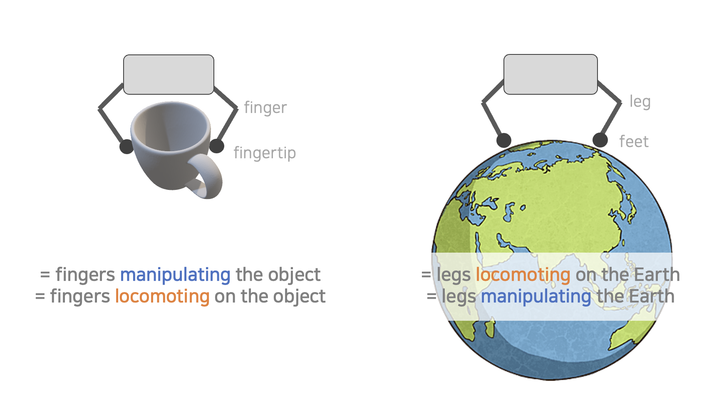

Dexterous Manipulation and Locomotion
Motivation

Although it seems like a totally different class of work in robotics, Locomotion and Dexterous Manipulation in fact has some weird similarities — both work with a similar hardware (set of multiple identical kinematic chains) and the nature of the task itself (making selective contacts with an object to achieve the goal) is also similar in a bigger sense. If we attach conventional manipulators on top of this, we can again observe a similarity — quadruped + arm is in fact analogous to a manipulator + dexterous hand gripper.

Of course there are huge differences in detail, but still, it's similar enough to make one wonder "What kind of lessons can we take from quadruped locomotion for dexterous manipulation, and even vice-versa?"
In fact, I'm already seeing some papers with a similar motivation — the one from Malik's group that adapts the idea of RMA (Rapid Motor Adaptation) for dexterous manipulation, which was mainly a technique used for locomotion.
This discussion aims to brainstorm together about the things that one can learn and adapt from one another — techniques from locomotion domain that can be applied to dexterous manipulation, and vice-versa.
Differences
| Dexterous Manipulation | Locomotion | |
|---|---|---|
| contact made with | diverse (graspable) objects | diverse terrains |
| diversity handled with | dataset of objects (e.g. parts of ShapeNet) | procedural random terrain generation |
| contact location | all parts of hand — finger tips, fingers, palm | usually only with their round feet |
| gravity direction | entire SO(3), especially when attached to arm | generally downwards |
| degrees of freedom | 16 dof (4 × 4 for each finger) | 12 dof (4 × 3 for each leg) |
| typical state inputs | depth + proprioceptive (visual crucial) | proprioceptive (mostly don't require visual) |
| Rewards during RL | tracking explicit spatial goals (e.g. SE(3) poses) | tracking time-derivatives (e.g. body velocity) |
| Sim2Real — DR | randomizes object friction, size, mass, joint params | randomizes terrain, ground friction, body mass/com |
| Sim2Real — SysID | robot dynamics sysID with massively parallel sim | RMA (online sysID/adaptation at test-time) |
| RL techniques | student-teacher learning | student-teacher learning, curriculum learning |
| failure recovery | — | separate policy for recovery from fallen states |
Terrain Generations vs Object Datasets
Locomotion policies are trained over randomized terrains generated by heuristic algorithms (e.g. Perlin noise for 2D heightmaps, diamond square for fractal terrains). They rely on "terrain generation algorithms" rather than a fixed dataset.
Terrains, in the domain of terrain-aware legged locomotion, are typically represented by heightmaps. A traditional method for terrain generation is to use Perlin noise. Although policies can be trained in simulation with such terrains, verifications must be done on real robots after sim-to-real transfer, because using Perlin noise does not lead to realistic heightmaps.
An emerging way to generate realistic terrains is to use GANs, where a discriminator tries to classify whether a sample comes from the dataset, and a generator tries to cheat the discriminator by generating samples from noises.
The major benefit of terrain generation with explicit parameters is that we can control task difficulty — which leads to curriculum learning. On the other hand, dexterous manipulation relies on a fixed (but large) dataset of objects. It is natural to ask whether we can use 3D shape generation methods during training, instead of fixed object datasets.
Rewards

Comparing Visual Dexterity (Chen et al.) and Rapid Locomotion (Margolis et al.), two observations:
- Fixed direction of gravity helps the locomotion world a lot. Visual Dexterity had to add reward terms just to make fingers "touch" the object; Rapid Locomotion did not — gravity was on their side.
- Locomotion usually tracks time-derivatives rather than reaching a far-away spatial goal — a "shorter-horizon" formulation.
RL techniques: Curriculum Learning
One major technique behind Rapid Locomotion's robustness was curriculum learning — gradually increasing task complexity. Extending this to dexterous manipulation seems straightforward.
Failure Recovery
Dexterous manipulation can adapt a similar system — regrasping the object when it drops. This might be the one component easier to implement in manipulation than locomotion.
Sim2Real — DR


Comparing Visual Dexterity and Rapid Locomotion, domain randomization was applied very similarly. The core components of DR were nearly identical.
Sim2Real — SysID
One key SysID technique from locomotion is RMA (Rapid Motor Adaptation) — abstracting terrain properties as a latent vector and inferring them from action/observation history.

Adapting this to dexterous manipulation is straightforward — and the paper below (also from Malik's group) did exactly that.